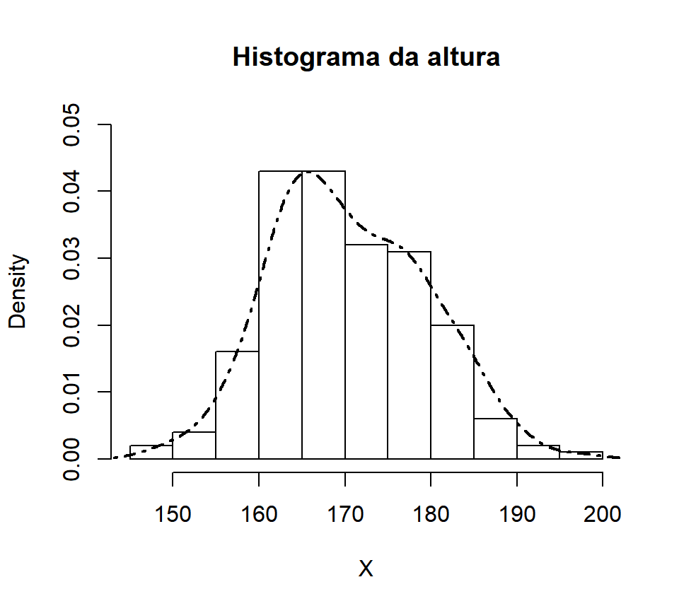
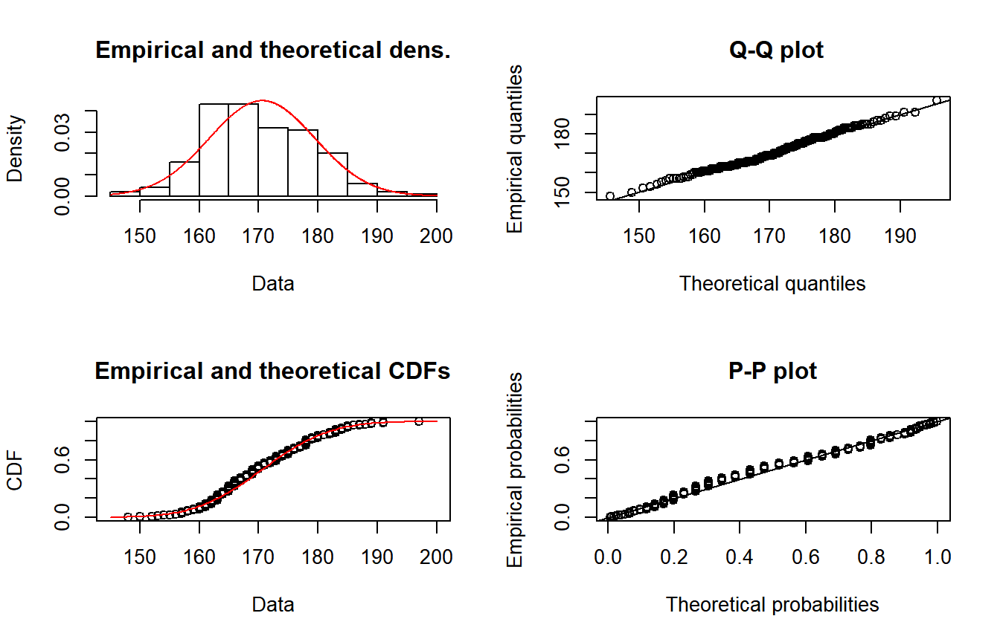
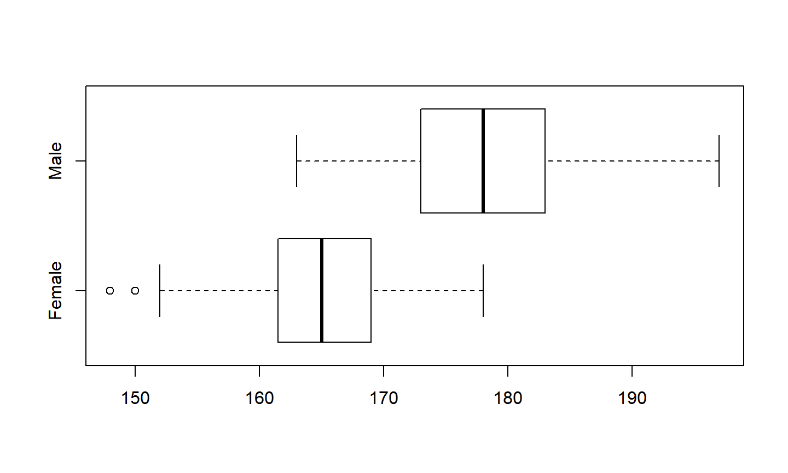
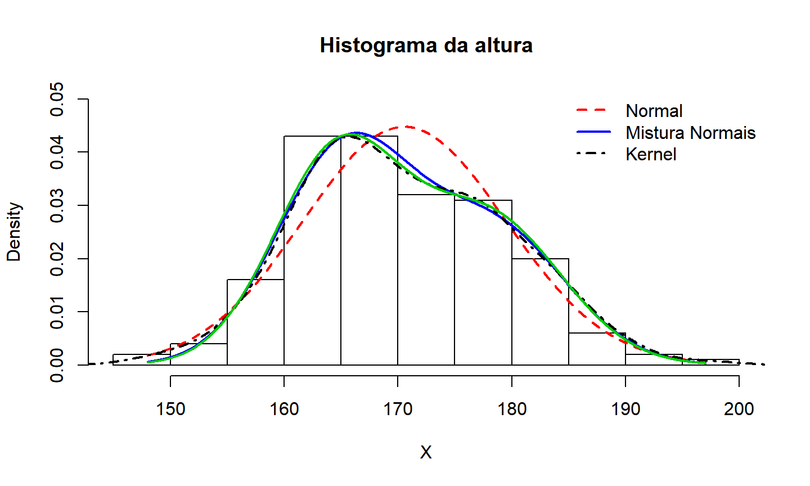

Regressão Linear
Perda Agregada
11 de abril de 2018
Aula de Hoje
Regressão Linear
Regressão Linear
Até agora, estamos fazendo inferência assumindo que observações são i.i.d., por exemplo, com distribuição \(Normal(\mu,\sigma^2)\).
Em muitos casos, esse modelo pode ser muito restritivo.
Vamos ver com um exemplo.
Exemplo - Distribuição altura
Base de dados
Davisdo pacoteCASdatasetsContém dados de 200 indivíduos sobre: sexo, peso em kg e altura em cm.
## Dados de peso e altura de 200 indivíduos (Fonte: Davis, 1990) require(CASdatasets) data(Davis) head(Davis,3)
## sex weight height reportedWeight reportedHeight ## 1 M 77 182 77 180 ## 2 F 58 161 51 159 ## 3 F 53 161 54 158
Exemplo - Distribuição altura
## ajustando altura X = Davis$height hist(X, freq=F, main="Histograma da altura", ylim=c(0,0.05)) lines(density(X), lwd=2, lty=4)

Exemplo - Distribuição altura
- Distribuição Normal?
## ajustando distribuição normal require(fitdistrplus) mod.normal = fitdist(X, "norm") param = mod.normal$estimate param
## mean sd ## 170.56500 8.90987
Exemplo - Distribuição altura

Exemplo - Distribuição altura
- Mistura de duas normais?
\[X \quad \sim \quad p.\, N(\mu_1,\sigma^2_1) + (1-p).\,N(\mu_2,\sigma^2_2) \]
## Mistura de duas Normais
## log da densidade
logdf = function(x,parameter){
p = parameter[1]; m1 = parameter[2]; m2 = parameter[3]
s1 = parameter[4]; s2 = parameter[5]
return(log(p*dnorm(x,m1,s1)+(1-p)*dnorm(x,m2,s2)))
}
Exemplo - Distribuição altura
Nesse caso, temos várias restrições para serem satisfeitas ao mesmo tempo: \(p \in (0,1)\) e \(\sigma_1,\sigma_2 \in (0,\infty)\).
- Em notação matricial para \(\boldsymbol \theta = (p, \mu_1, \mu_2, \sigma_1, \sigma_2)'\):
\[\begin{pmatrix} 1&0&0&0&0 \\ -1&0&0&0&0 \\ 0&0&0&1&0 \\ 0&0&0&0&1 \end{pmatrix} \boldsymbol \theta + \begin{pmatrix} 0 \\ 1 \\ 0 \\ 0 \end{pmatrix} \geq \boldsymbol 0 \]
- Precisamos usar outra função de otimização para encontrar o Estimador de Máxima Verossimilhança.
Exemplo - Distribuição altura
- Vamos usar a função
constrOptim()que encontra o mínimo de uma função sob restrições lineares.
logL = function(parameter) -sum(logdf(X,parameter)) ## restrições Amat = matrix(c(1,-1,0,0,0,0,0,0,0,0,1,0,0,0,0,0,0,0,0,1), 4, 5) bvec = c(0,-1,0,0) mix1 = constrOptim(c(.5,160,180,10,10), logL, NULL, ui = Amat, ci = bvec)$par mix1
## [1] 0.5996263 165.2690084 178.4991624 5.9447675 6.3564746
Exemplo - Distribuição altura
- Outra maneira seria usar o algoritmo EM para encontrar o EMV.
## outra maneira - algoritmo EM require(mixtools) mix2 = normalmixEM(X)
## number of iterations= 413
c(mix2$lambda[1], mix2$mu, mix2$sigma)
## [1] 0.599780 165.270363 178.499732 5.946003 6.356135
Exemplo - Distribuição altura

Exemplo - Distribuição altura
Para o modelo de mistura, consideramos que a variável da mistura \(\Theta\) era uma variável latente, isto é, não observada, a ser estimada pelo modelo.
Mas considerando a estrutura dos nossos dados, temos uma variável observada que seria uma boa variável para determinar os grupos da mistura.
Exemplo - Distribuição altura

Exemplo - Distribuição altura
- Vamos ajustar um modelo de mistura para os diferentes sexos:
\[X \quad \sim \quad p_M\,.\, N(\mu_M,\sigma^2_M) + p_F\,.\,N(\mu_F,\sigma^2_F) \]
- Aqui, \(p_M\) e \(p_F\) são as proporções de homens e mulheres na população, respectivamente.
Exemplo - Distribuição altura
## Ajustando a mistura por sexo sex = Davis$sex (pM = mean(sex=="M"))
## [1] 0.44
(paramF = fitdistr(X[sex=="F"],"normal")$estimate)
## mean sd ## 164.714286 5.633808
(paramM = fitdistr(X[sex=="M"],"normal")$estimate)
## mean sd ## 178.011364 6.404001
Exemplo - Distribuição altura

Exemplo - Distribuição altura
Na verdade, esse modelo de mistura baseado no sexo é um caso de modelo linear.
Vamor (re)ver mais detalhes.
Regressão Linear
Denote por \(Y\) a variável resposta (nossa variável de interesse).
E assuma que temos outras variáveis observadas para os indivíduos que estão relacionadas a \(Y\). Vamos denotar essas covariáveis por \(\boldsymbol X = (\boldsymbol X_1,\dots,\boldsymbol X_k)\).
Isso quer dizer que para cada observação \(Y_i\), também observamos \(\boldsymbol X_i=(X_{1,i},\dots,X_{k,i})\).
As covariáveis (ou variáveis explicativas) \(X_k\) podem ser contínuas ou categóricas.
Regressão Linear
No banco de dados
Davis, a variável de interesse é a altura, e as covariáveis são sexo e peso.Ao invés de assumir \(Y \sim N(\mu, \sigma^2)\), em um modelo de regressão, vamos assumir que:
\[ Y | \boldsymbol X = \boldsymbol x \quad \sim \quad N \left( \mu(\boldsymbol x), \, \sigma^2\right) \] onde \(\mu(\boldsymbol x)\) agora é uma função das covariáveis.
Regressão Linear
No nosso caso, \(\boldsymbol x=(x_1,x_2)\), onde \(x_1\) é o sexo e \(x_2\) é o peso em kg dos indivíduos. Assim, \(\mu(x_1,x_2)=\beta_0 + \beta_{1,M}.\mathbb{1}(x1=M) + \beta_{1,F}.\mathbb{1}(x1=F) + \beta_2.x_2\).
O modelo com \(\mu(x_1,x_2)\) acima não pode ser identificado, não podemos ter o intercepto mais um parâmetro para cada um dos grupos. O usual é manter o intercepto e escolher um dos grupos para ser a categoria de referência.
Podemos escrever o modelo completo como:
\[ Y = \beta_0 + \beta_{1,M}.\mathbb{1}(x1=M) + \beta_2.x_2 + \varepsilon \] onde \(\varepsilon \sim N(0,\sigma^2)\) é o erro.
- Parâmetros a serem estimados: \(\beta_0\), \(\beta_{1,M}\), \(\beta_2\) e \(\sigma^2\).
Regressão Linear - Inferência
- O Estimador de Máxima Verossimilhança pode ser obtido maximizando-se:
\[\mathcal{L} \left( (\boldsymbol \beta, \sigma); \boldsymbol y, \boldsymbol x \right) = \prod_{i=1}^n \varphi(y_i\,;\,\beta_0+ \beta_1 x_1 + \beta_2 x_2, \sigma^2 ) \] onde \(\varphi(y; \mu,\sigma^2)\) é a densidade da normal.
- Nesse modelo, encontrar o EMV é o mesmo que minimizar a soma dos quadrados dos resíduos (Método dos Mínimos Quadrados).
Regressão Linear - Exemplo
- Podemos ajustar um modelo de regressão linear no R usando a função
lm().
mod.lin = lm(Y~X1+X2) summary(mod.lin)
## ## Call: ## lm(formula = Y ~ X1 + X2) ## ## Residuals: ## Min 1Q Median 3Q Max ## -14.4301 -3.0775 0.2414 3.3052 18.9547 ## ## Coefficients: ## Estimate Std. Error t value Pr(>|t|) ## (Intercept) 145.86123 2.26947 64.271 < 2e-16 *** ## X1M 6.99928 1.04305 6.710 2.01e-10 *** ## X2 0.33138 0.03896 8.506 4.50e-15 *** ## --- ## Signif. codes: 0 '***' 0.001 '**' 0.01 '*' 0.05 '.' 0.1 ' ' 1 ## ## Residual standard error: 5.157 on 197 degrees of freedom ## Multiple R-squared: 0.67, Adjusted R-squared: 0.6666 ## F-statistic: 200 on 2 and 197 DF, p-value: < 2.2e-16
Regressão Linear - Exemplo
- Predições: e se quisermos estimar a altura de três pessoas com sexo M, M e F e peso 100kg, 70kg e 65kg, respectivamente?
new.obs = data.frame(X1=c("M","M","F"),X2=c(100,70,65))
predict(mod.lin, newdata=new.obs)
## 1 2 3 ## 185.9983 176.0570 167.4008
Perda Agregada
Perda Agregada
- Já vimos a definição de soma aleatória ou perda agregada:
\[S = \sum_{i=1}^N X_i \] onde \(N\) é o número de indenizações e \((X_i)\) é o valor de cada indenização, com \(S=0\) se \(N=0\).
Distribuição da Soma Agregada
Suposições:
\(N\) e \(X_i\) são independentes;
\((X_i) \stackrel{iid}{\sim} F_X\).
Assim, a função de distribuição acumulada da soma agregada é:
\[ F_S(s) = \sum_{n=0}^{\infty} \mathbb{P}(N=n).\, \mathbb{P}(X_1+\dots+X_n \leq s) \]
Distribuição da Soma Agregada
Para algumas distribuições, conseguimos encontrar facilmente a distribuição da soma \(X_1 + \dots + X_n\).
Por exemplo, se \(X_i \sim Gama(\alpha, \lambda)\), então
\[X_1 + \dots + X_n \sim Gama(n\alpha, \,\lambda) \]
Em geral, a distribuição da soma \(S = X_1 + \dots + X_n\) não terá necessariamente a mesma distribuição de \(X\).
Há algumas alternativas para computar a distribuição da soma agregada nesses casos (recursão de Panjer, aproximação normal, aproximação potência da normal, aproximação Gama - ver Seção 2.5.1). Esses métodos estão implementados na função
aggregateDistno pacoteactuar.
Processo de Poisson
O Processo de Poisson é um dos processos estocásticos mais importantes para seguros.
É utilizado para descrever o número de sinistros que ocorreram em um intervalo de tempo.
É um processo de contagem com incrementos independentes e estacionários (distribuição não muda com o tempo).
Processo de Poisson
- \(N_t\): número de sinistros que ocorreram até o tempo \(t\).
\[N_t \sim Poisson(\lambda) \]
- \((T_i)\): tempo até a \(i\)-ésima ocorrência
\[\{ N_t = n \} = \{ T_n \leq t \;\;\cap\;\; T_{n+1}>t\} \quad \mbox{para todo } n \geq 1\]
\(W_i = T_i - T_{i-1}\): tempo entre ocorrências
Quando \(W_i \sim exp(\lambda)\), então \((N_t)\) é um Processo de Poisson.
Processo de Poisson
- Processo de Poisson Homogêneo:
\[ \mathbb{P}(N_{t+h} - N_t = k) = \frac{1}{k!} e^{-\lambda h} (\lambda h)^k \]
- Processo de Poisson Não-homogêneo:
\[ \mathbb{P}(N_{t+h} - N_t = k) = \frac{1}{k!} e^{-\int_t^{t+h} \lambda_s \, ds} \left(\int_t^{t+h} \lambda_s \, ds \right)^k \]
Processo de Poisson
Alguns algoritmos para gerar um Processo de Poisson são apresentados na seção 2.5.2.
Uma aplicação usual é quando temos seguros com franquias.
Suponha que as ocorrências de sinistros seguem um Processo de Poisson com intensidade \(\lambda\), e as indenizações individuais tem distribuição \(F\).
Então o processo de indenizações acima da franquia \(d\) também segue um Processo de Poisson com intensidade \([1-F(d)].\lambda\).
Processo de Poisson composto: \(S_t = \displaystyle \sum_{i=1}^{N_t} X_i\) onde \(N_t\) é PP e \(X_i\)’s são v.a.’s iid (seção 2.5.3).